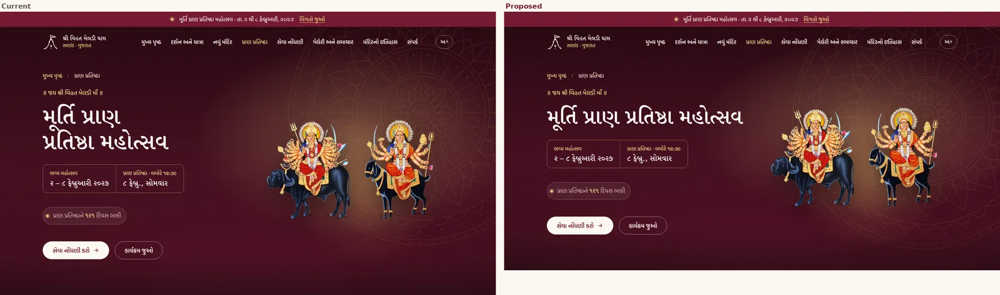
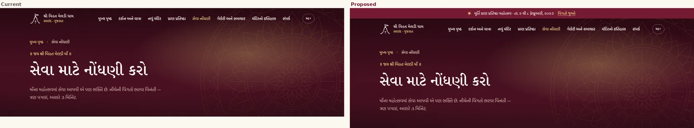
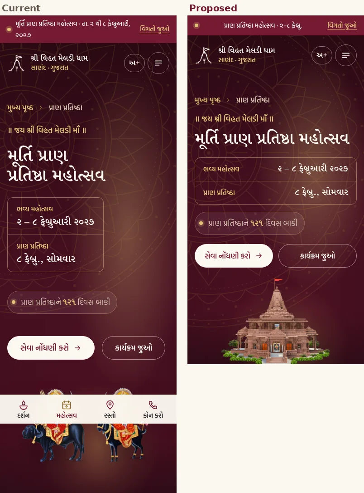
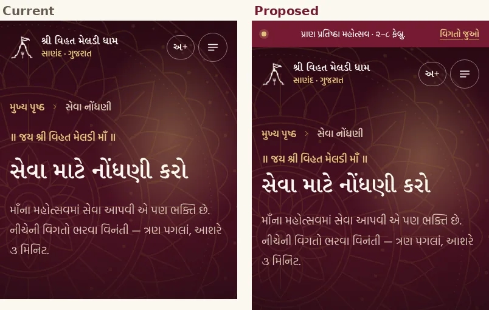

Page banner
Specified · Figma build prepared- Purpose
- The top of every inner page: where you are, the page title, and the next action.
- Variants
- Size Feature (New Temple, Festival, Gallery, History — with page art) · Standard (Darshan, Seva, Contact, 404 — text only) × Device Desktop · Phone.
- Anatomy
- Announcement strip (44 px) → header over the banner (88 / 72 px) → breadcrumb → eyebrow ॥ જય શ્રી વિહત મેલડી માઁ ॥ → title (Display L, 60 / 36 px) → lead (19 px, max 54 characters per line) → buttons → page art (Feature only) → lotus chakra in the top-right corner, half visible at 15 % (approved).
- Sizes
- Desktop: Feature at least 680 px, Standard at least 460 px, plus the 44 px strip. Phone: as tall as the content (no fixed height); Feature art at most 220 px. On the phone the festival banner's art is one image, the new-temple render (190 px tall, shown whole), in place of the deity pair (approved).
- Rules
- Content is aligned to the top, so the breadcrumb starts 120 px below the banner top on every page. Today the title sits anywhere from 228 to 378 px down, depending on the art.
- The title stays on one line on desktop where it fits. “પ્રાણ પ્રતિષ્ઠા” is never split (non-breaking space).
- Festival banner on the phone (approved 10 Oct): title, dates, countdown and both actions first; then one image — the new-temple render from the ZIP (
14_temple_new-temple-render), shown whole and standing on the bottom edge, on the burgundy ground with the faint lotus chakra. Desktop and tablet keep the full composition with the deity pair. - Phone dates sit in two rows, label left and date right. A date never breaks inside itself; on a very narrow phone (320 px) the whole date moves under its label rather than leaving “૨૦૨૭” alone.
- Wording stays as approved on the site: ॥ જય શ્રી વિહત મેલડી માઁ ॥, મૂર્તિ પ્રાણ પ્રતિષ્ઠા મહોત્સવ, ૨ – ૮ ફેબ્રુઆરી ૨૦૨૭. The layout changes; the copy does not.
- Phone, every inner page: eyebrow 10 px above the title, 16 px between groups. Buttons share a row only when both labels fit; otherwise each takes a full row. A label never breaks inside a button.
- Phone page art: the 220 px cap applies to pictures only. The History contents list and the Gallery collage keep their full height.
- The announcement strip appears on every inner page; on phone it uses the short text “પ્રાણ પ્રતિષ્ઠા મહોત્સવ · ૨–૮ ફેબ્રુ.” so “૨૦૨૭” never wraps.
- Fixes
- Banner heights 423–792 px → two sizes (audit B3) · festival title broke as “મૂર્તિ પ્રાણ / પ્રતિષ્ઠા મહોત્સવ” (B5) · strip missing on 4 of 8 inner pages (B3) · phone strip wrapped the year (B5).




Festival desktop 824 → 752 pxFestival phone 1,053 → 770 pxSeva desktop 457 → 504 px (strip added)Title start: 120 px on every page